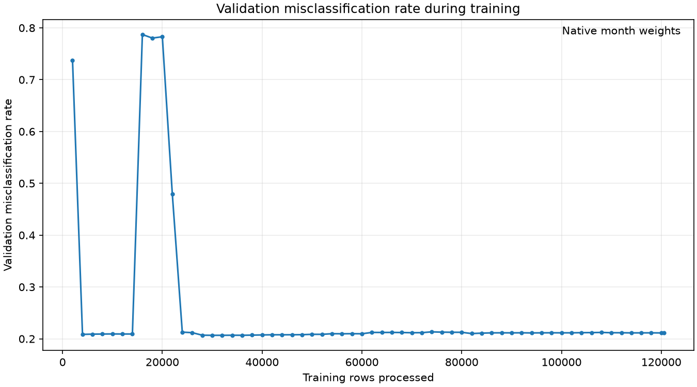
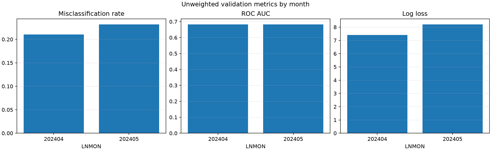
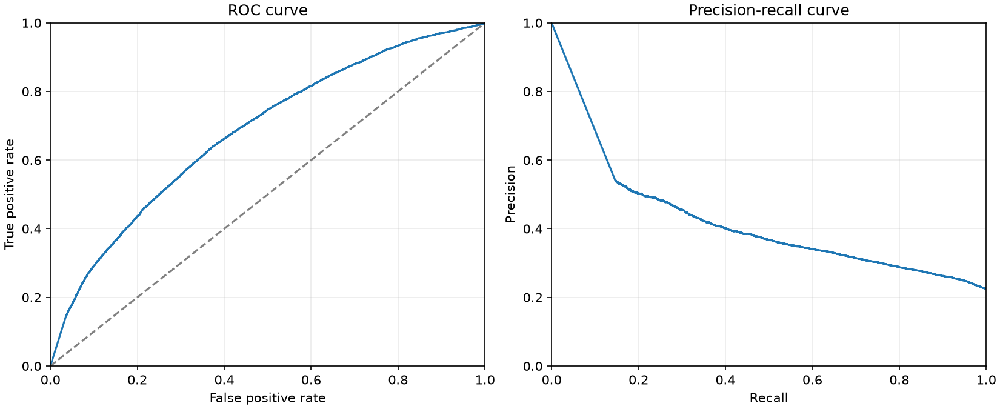
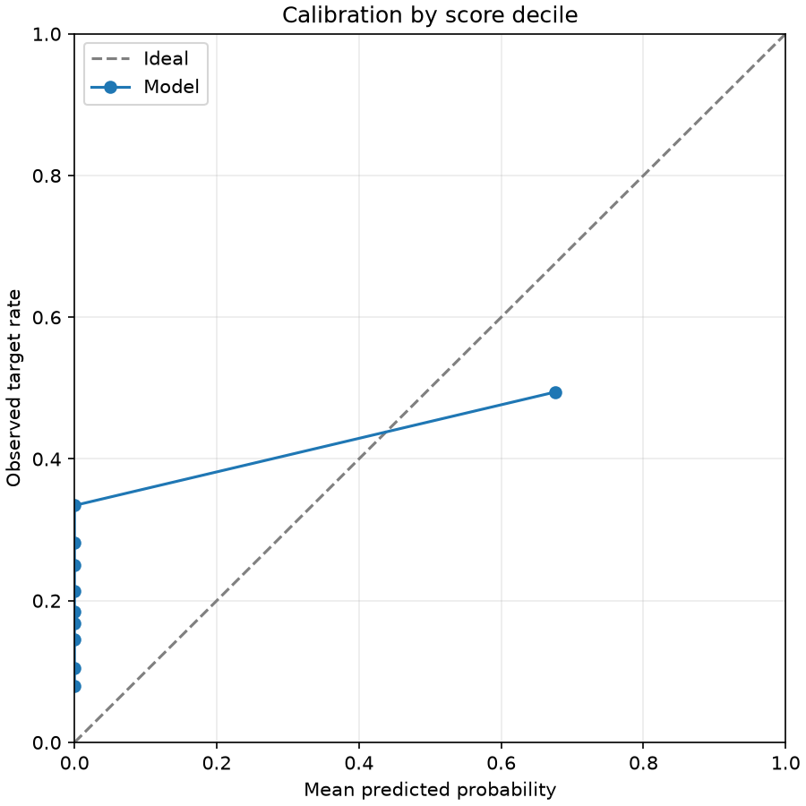
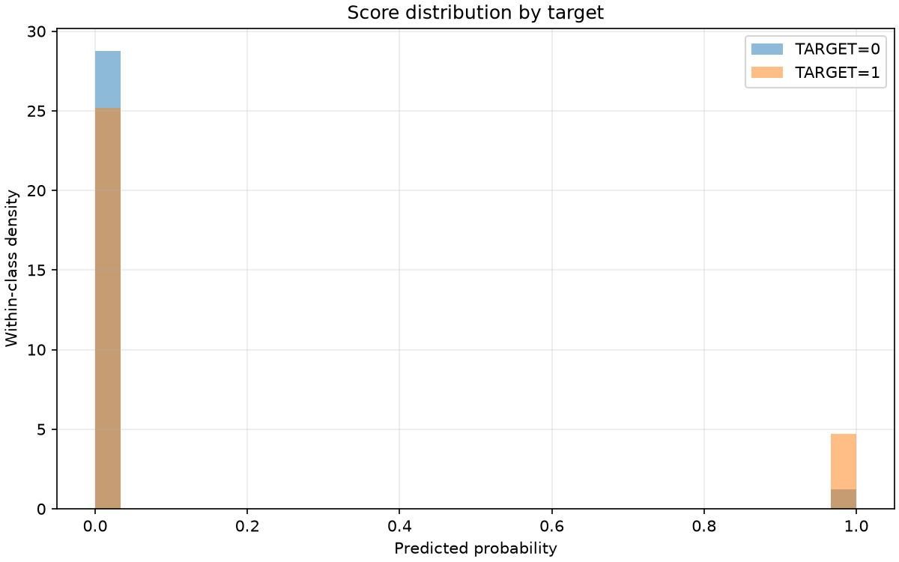
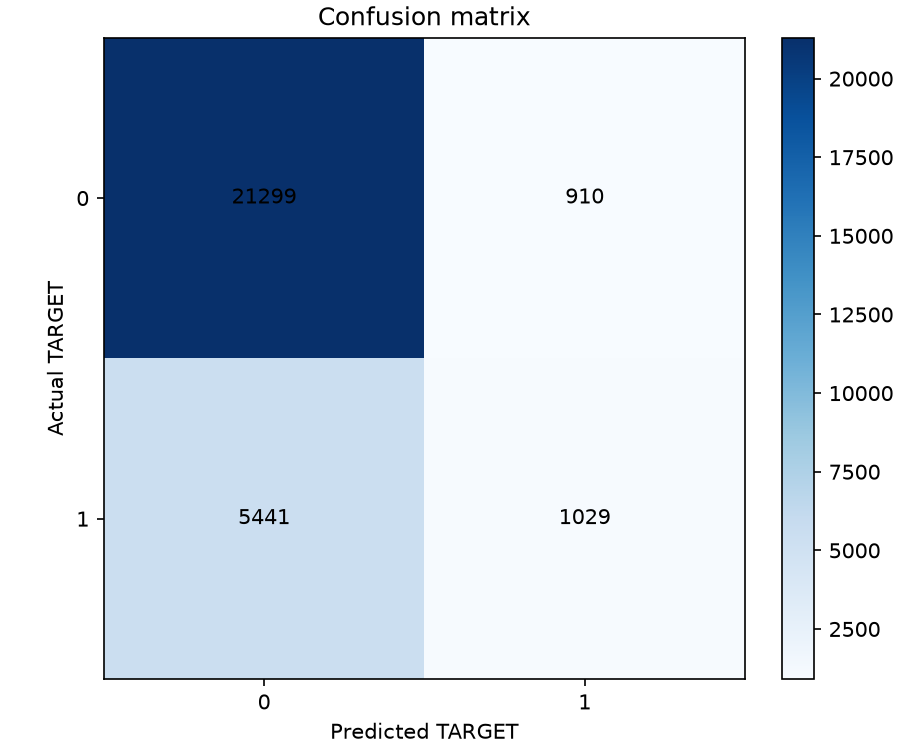

Final validation 0/1 loss (misclassification rate): 0.221451
The training curve uses the model's original validation protocol. Scores describe undersampled data, not an independent test set.
| scope | month | rows | target_1_rows | misclassification_rate | always_zero_error | target_1_rate | roc_auc | average_precision | log_loss | brier_score |
|---|---|---|---|---|---|---|---|---|---|---|
| overall_unweighted | all | 28679 | 6470 | 0.22145 | 0.22560 | 0.22560 | 0.68271 | 0.38680 | 7.81998 | 0.22118 |
| monthly_unweighted | 202404 | 13966 | 2989 | 0.21044 | 0.21402 | 0.21402 | 0.68280 | 0.37710 | 7.41051 | 0.21010 |
| monthly_unweighted | 202405 | 14713 | 3481 | 0.23190 | 0.23659 | 0.23659 | 0.68224 | 0.39574 | 8.20866 | 0.23170 |
| evaluation | protocol | months | month_weighted | misclassification_rate |
|---|---|---|---|---|
| training_protocol | v2 | 202403,202404,202405 | True | 0.21147 |
| selected_protocol | v1 | 202404,202405 | False | 0.22145 |
| actual | predicted | rows | weight_sum |
|---|---|---|---|
| 0 | 0 | 21299 | 21299.00000 |
| 0 | 1 | 910 | 910.00000 |
| 1 | 0 | 5441 | 5441.00000 |
| 1 | 1 | 1029 | 1029.00000 |
| decile | rows | weight_sum | mean_probability | observed_target_rate |
|---|---|---|---|---|
| 1 | 2868 | 2868.00000 | 0.00000 | 0.07950 |
| 2 | 2868 | 2868.00000 | 0.00000 | 0.10530 |
| 3 | 2868 | 2868.00000 | 0.00000 | 0.14505 |
| 4 | 2868 | 2868.00000 | 0.00000 | 0.16771 |
| 5 | 2868 | 2868.00000 | 0.00000 | 0.18410 |
| 6 | 2868 | 2868.00000 | 0.00000 | 0.21374 |
| 7 | 2868 | 2868.00000 | 0.00000 | 0.25000 |
| 8 | 2868 | 2868.00000 | 0.00000 | 0.28173 |
| 9 | 2868 | 2868.00000 | 0.00000 | 0.33438 |
| 10 | 2867 | 2867.00000 | 0.67651 | 0.49459 |
| threshold | selected_for_primary_score | weighted_true_positive | weighted_false_positive | weighted_true_negative | weighted_false_negative | misclassification_rate | precision | recall | specificity |
|---|---|---|---|---|---|---|---|---|---|
| 0.10000 | False | 1036.00000 | 919.00000 | 21290.00000 | 5434.00000 | 0.22152 | 0.52992 | 0.16012 | 0.95862 |
| 0.20000 | False | 1035.00000 | 916.00000 | 21293.00000 | 5435.00000 | 0.22145 | 0.53050 | 0.15997 | 0.95876 |
| 0.30000 | False | 1034.00000 | 915.00000 | 21294.00000 | 5436.00000 | 0.22145 | 0.53053 | 0.15981 | 0.95880 |
| 0.40000 | False | 1031.00000 | 914.00000 | 21295.00000 | 5439.00000 | 0.22152 | 0.53008 | 0.15935 | 0.95885 |
| 0.50000 | True | 1029.00000 | 910.00000 | 21299.00000 | 5441.00000 | 0.22145 | 0.53069 | 0.15904 | 0.95903 |
| 0.60000 | False | 1027.00000 | 909.00000 | 21300.00000 | 5443.00000 | 0.22149 | 0.53048 | 0.15873 | 0.95907 |
| 0.70000 | False | 1025.00000 | 905.00000 | 21304.00000 | 5445.00000 | 0.22142 | 0.53109 | 0.15842 | 0.95925 |
| 0.80000 | False | 1023.00000 | 904.00000 | 21305.00000 | 5447.00000 | 0.22145 | 0.53088 | 0.15811 | 0.95930 |
| 0.90000 | False | 1021.00000 | 901.00000 | 21308.00000 | 5449.00000 | 0.22142 | 0.53122 | 0.15781 | 0.95943 |





